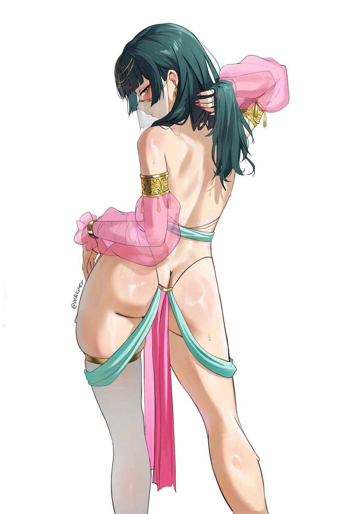

64 · 11 · 7 시간 전 · 원문

수집 당시 댓글 11개
쳔사의날개 · 6 시간 전
아;
극한의씹쌉거유폭유육덕충 · 6 시간 전
쳐내라
콜린스코빌드 · 5 시간 전
마오마오는 이상하게 하나도 안꼴림
일진교육미이수자 · 5 시간 전
남잔가요?
피자스쿨 · 4 시간 전
왜 여자임
년째도쿄생활중 · 4 시간 전
아사다마오 어디감?
파카사탕 · 4 시간 전
쩌둥~
초고수 · 3 시간 전
아니이개외안되 · 2 시간 전
애한테 저런옷 입히면 안되요
어쩔수없이쉬었음 · 2 시간 전
-5%
유한매트 · 2 시간 전
와

아;